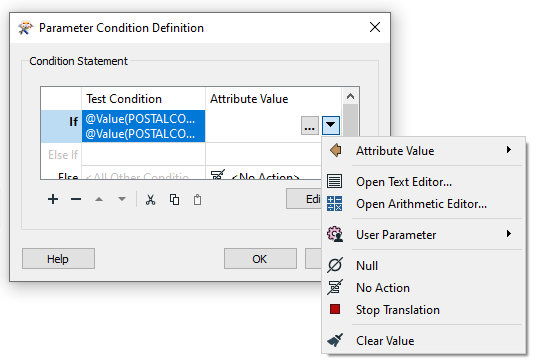

After completing this unit, you’ll be able to:
After filtering your data with a transformer like the Tester or the TestFilter, you can create attributes or set their values based on these divisions. Here an author divides data into neighborhoods using a postcode attribute and the TestFilter:
However, a large number of AttributeManager transformers like this is not a good idea. It causes the workspace to be bloated: hard to navigate and harder to edit. It does not scale particularly well either. Since each value needs a separate TestFilter port and AttributeManager combination, it's easy to imagine the difficulties involved with, say, more than 50 values!
One solution is to use a simple AttributeValueMapper transformer. However, that transformer only permits a single, simple condition, such as X=Y. If a more advanced set of conditions is required, then the preferred solution is conditional attribute values.
Conditional attribute values can be used to replace many existing transformers of the same type. Instead of creating a set of conditions and values as separate objects in a workspace, you set both condition and value inside a single transformer.
The option for conditional attribute values is found in the drop-down dialog wherever you can provide an attribute value. For example, in the AttributeManager:

In the above screenshot, a workspace author is creating a new attribute called NEIGHBORHOOD. The values for NEIGHBORHOOD are conditional upon other attribute values and – in this example – are set up like this:

Like the AttributeValueMapper, a series of conditions (left) map to different values (right). However, in contrast to the AttributeValueMapper, this dialog allows much more complex conditions than a simple 1:1 mapping. That’s because full test capabilities are built into this dialog.
The conditions are defined by double-clicking in the Test Condition field to open up a Tester-style dialog. Both the condition and the output value can be set within this dialog:

Many options beyond simple text or numbers are available for setting the Attribute Value in the Parameter Conditional Definition dialog:

Once the conditions are set, the original dialog – in this case, an AttributeManager – looks like this, with the number of conditions defining the number of possible values:

Conditional attribute values are great for when you need to map (or set) an attribute in relation to the value of an existing attribute and when the conditions are more complex than can be handled in a simple AttributeValueMapper (or AttributeRangeMapper) transformer.
In essence, conditional values are like a combination of TestFilter and AttributeCreators in the range of functionality that they include.